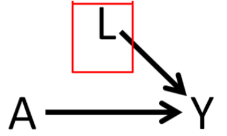

Chapter 2 Defining Parameter
We are particularly interested about estimating the parameter ‘treatment effect estimate.’ For that, let us define the notations first.
2.1 Potential outcome
- \(A\): Exposure status
- \(1\) = takes Rosuvastatin
- \(0\) = does not take rosuvastatin
- \(Y\): Outcome: Total cholesterol levels
- \(Y(A=1)\) = potential outcome when exposed
- \(Y(A=0)\) = potential outcome when not exposed
- \(L\): Risk factor (or later Confounder when randomization not present): Age

2.2 Parameters of interest
When assessing the effect of an exposure on an outcome, we are interested about the following estimands
- treatment effect for an individual (TE)
- average treatment effect (ATE)
- average treatment effect on the treated (ATT)
2.2.1 TE
- John takes Rosuvastatin \((A=1)\) and his total cholesterol level is = \(Y(A=1)\) = \(195\) mg/dL (milligrams per deciliter) after 3 months
- John does not take Rosuvastatin \((A=0)\) and his total cholesterol level is = \(Y(A=0)\) = \(245\) mg/dL after 3 months Effect of Rosuvastatin on John is =
\(TE = Y(A=1) - Y(A=0) = 195 - 245 = - 50\)

|
TE is not estimable as we generally can’t observe outcomes under both treatment conditions. |
2.2.2 ATE
Person <- c("John","Jim","Jake","Cody","Luke")
Y1 <- c( 195, 100, 210, 155, 165)
Y0 <- c(245, 160, 270, 210, 230)
PotentialOutcomes <- data.frame(Person, Y1, Y0, TE = Y1-Y0)
mean.values <- c(NA, mean(PotentialOutcomes$Y1),
mean(PotentialOutcomes$Y0),
mean(PotentialOutcomes$TE))
PotentialOutcomes <- rbind(PotentialOutcomes, mean.values)
kable(PotentialOutcomes, booktabs = TRUE,
col.names = c("Person", "Y(1)", "Y(0)", "TE")) %>%
row_spec(6, bold = T, color = "white", background = "#D7261E")| Person | Y(1) | Y(0) | TE |
|---|---|---|---|
| John | 195 | 245 | -50 |
| Jim | 100 | 160 | -60 |
| Jake | 210 | 270 | -60 |
| Cody | 155 | 210 | -55 |
| Luke | 165 | 230 | -65 |
| 165 | 223 | -58 |
\(ATE = E[Y(A=1)-Y(A=0)]\)
mean(PotentialOutcomes$Y1 - PotentialOutcomes$Y0)## [1] -582.2.3 Interpretation of ATE
This is a treatment effect (on an average) of the following hypothetical situation
- having the entire population as treated, vs.
- having the entire population as untreated.
Entire population is the reference goup here.
2.2.4 Identifiability Assumptions
If we can compute a causal quantity, such as \(ATE = E[Y(A=1)-Y(A=0)]\) using a statistical quantity, such as mean(PotentialOutcomes$Y1 - PotentialOutcomes$Y0), we say that the causal quantity is identifiable.
| Exchangeability | \(Y(1), Y(0) \perp A\) | Treatment assignment is independent of the potential outcome |
| Positivity | \(0 < P(A=1) < 1\) | Subjects are eligible to receive both treatment |
| Consistency | \(Y = Y(a) \forall A=a\) | No multiple version of the treatment |
| No interference | Treated one patient will not impact outcome for others |

Extending these assumptions when confounders exist:
| Conditional Exchangeability | \(Y(1), Y(0) \perp A | L\) | Treatment assignment is independent of the potential outcome, given L |
| Positivity | \(0 < P(A=1 | L) < 1\) | Subjects are eligible to receive both treatment, given L |
2.2.5 ATT
- Assume that the following are the confounders that impact the relationship between rosuvastatin and cholesterol levels
- race
- sex
- age
- We have 5 Rosuvastatin-treated subjects who are all
- white,
- male,
- 50 years of age
- We recruited additional 5 subjects (same characteristics) to non-rosuvastatin group.
Treated group:
Person <- c("John","Jim","Jake","Cody","Luke")
Y1 <- c( 195, 100, 210, 155, 165)
Y0 <- rep(NA, length(Y1))
Treated <- data.frame(Person, Y1, Y0, TE = Y1-Y0)
Treated[6,2] <- mean(Treated$Y1)
kable(Treated, booktabs = TRUE,
col.names = c("Person", "Y(1)", "Y(0)", "TE"))%>%
row_spec(6, bold = T, color = "white", background = "#D7261E")| Person | Y(1) | Y(0) | TE |
|---|---|---|---|
| John | 195 | ||
| Jim | 100 | ||
| Jake | 210 | ||
| Cody | 155 | ||
| Luke | 165 | ||
| 165 |
Untreated group: New folks with characteristics similar to the treated group.
Person <- c( "Jack", "Dustin", "Cole", "Lucas", "Dylan")
Y0 <- c( 245, 160, 270, 210, 165)
Y1 <- rep(NA, length(Y0))
Untreated <- data.frame(Person, Y1, Y0, TE = Y1-Y0)
Untreated[6,3] <- mean(Untreated$Y0)
kable(Untreated, booktabs = TRUE,
col.names = c("Person", "Y(1)", "Y(0)", "TE"))%>%
row_spec(6, bold = T, color = "white", background = "#D7261E")| Person | Y(1) | Y(0) | TE |
|---|---|---|---|
| Jack | 245 | ||
| Dustin | 160 | ||
| Cole | 270 | ||
| Lucas | 210 | ||
| Dylan | 165 | ||
| 210 |
\(ATT = E[Y(A=1)-Y(A=0) | A = 1]\)
mean(Treated$Y1) - mean(Untreated$Y0)## [1] -452.2.6 Interpretation of ATT
This is a treatment effect (on an average) of
- the treated population (reference group), vs.
- untreated population, but have similar characteristics to the reference group/treated population.
It is also possible to change the reference population to untreated population. Then it is called Average Treatment Effect for the Untreated (ATU).
2.2.7 ATT vs. ATE
|
|
In a RCT (enough n), the ATT & ATE are equivalent |
|
|
In an observational study the ATT and ATE are not necessarily the same. |